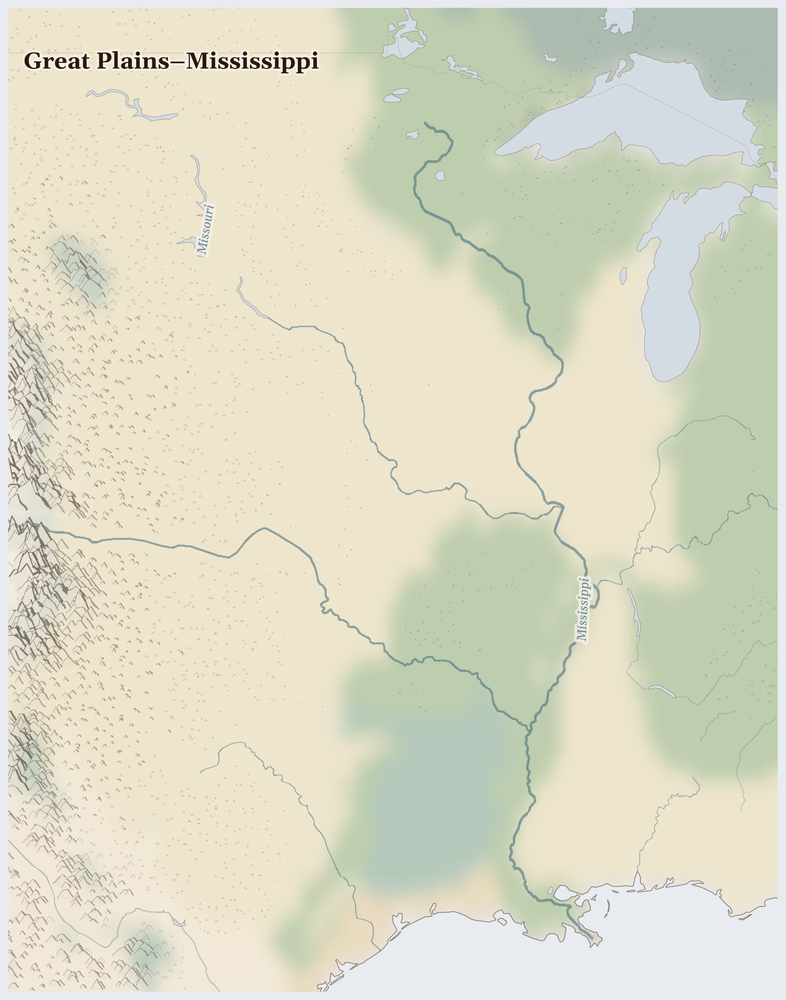

Great Plains–Mississippi
United States
Nearctic
The wide open heart of North America — grasslands so flat and huge that the sky feels enormous, gathered up by one of the world's great rivers, the Mississippi, rolling down to the sea. Once, millions of bison thundered across these plains.
How Life Works Here
This is a breadbasket for the world: oceans of corn and wheat, and cattle by the million, grown here and shipped down the great river and out across the seas. Grain barges as long as a street float down the Mississippi day and night.
Large-scale farm operators (average 1,200+ acres), Migrant seasonal harvest labour in United States.
Ranching families (cow-calf operations), Meatpacking workers (largely immigrant, largely invisible) in United States.
Rural communities in mobile homes (disproportionate tornado fatality risk), Farming communities losing topsoil to wind erosion as Ogallala depletion exposes bare ground, Urban populations …
What Is Happening
Mostly this is a settled, farming land. The fairness question is an old and important one: this was the first peoples' land, and their promises and places were often not honoured. When a big oil pipeline was built near one nation's water at a place called Standing Rock, people came from all over to stand — peacefully — and say water is life. They reminded the whole country to remember who was here first, and to guard the water everyone drinks.
Something Wonderful
The bison — huge shaggy animals that were almost all gone — are being brought back to the plains by Native nations, herd by herd. And every autumn, tiny orange monarch butterflies cross these whole plains on a journey of thousands of miles to a forest in Mexico they have never seen. Something so small, travelling so far.
Let's Do Something Together
Follow Water on a Map
Find a river on your map or globe. Trace it with your finger from where it starts high up in the mountains all the way down to where it meets the sea. Water travels a very long way! Families who live near this river use it to drink, to wash, and to grow food.
- world map or globe
- blue crayon or marker
For grown-ups
Rivers in this region are contested resources — upstream dams and irrigation diversions reduce flow to downstream communities who depend on seasonal flooding for agriculture.
Let Us Pray Together
Thank you, God, for water. Help the families who need clean water today.
Leader: We pray for the gifts of this place. For the gifts of Great Plains–Mississippi.
All: Lord, hear our prayer.
Leader: We pray for what our comfort costs elsewhere. For what comfort here costs elsewhere: the metals in our machines and the goods in our houses; fo..
All: Lord, hear our prayer.
Leader: We pray for those who bear the cost here. For those who bear the cost within this plenty.
All: Lord, hear our prayer.
Leader: We pray for quietness. This place asks of us not alarm but attention.
All: Lord, hear our prayer.
O praise the Lord, all you nations; praise him, all you peoples. For great is his steadfast love towards us, and the faithfulness of the Lord endures for ever. Alleluia.
Collect
Lord of all power and might, the author and giver of all good things: graft in our hearts the love of your name, increase in us true religion, nourish us with all goodness, and of your great mercy keep us in the same; through Jesus Christ your Son our Lord, who is alive and reigns with you, in the unity of the Holy Spirit, one God, now and for ever.
Amen.
Talk About It
At Standing Rock, people stood together and said "water is life." What are three things you think everybody, everywhere, has a right to?
One Thing We Can Do
If bread or corn is on your table, it may have grown on these plains. Say thank you for farmers and for the first peoples of the land — and for water, which is life.